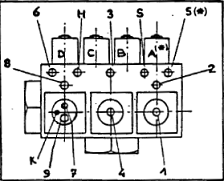
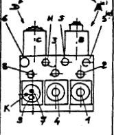

BLAIN

| Electro-vanne Arrêt Montée(si EV100) | |
| Electro-vanne PV montée | |
| Electro-vanne PV descente | |
| Electro-vanne Arrêt Descente | |
| Vanne Descente Manuel | |
| Valve de Surpression | |
| Sécurité Piston(Si appareil mouflé) |
_________________________________

| Réglage du BY-PASS | |
| Démarrage Montée | |
| Ralentissement Montée | |
| Petit Vitesse Montée | |
| Arrêt en Montée(Si EV100) | |
| Démarrage Descente | |
| Grande Vitesse Descente | |
| Ralentissement Descente | |
| Petite Vitesse Descente |
BLAIN